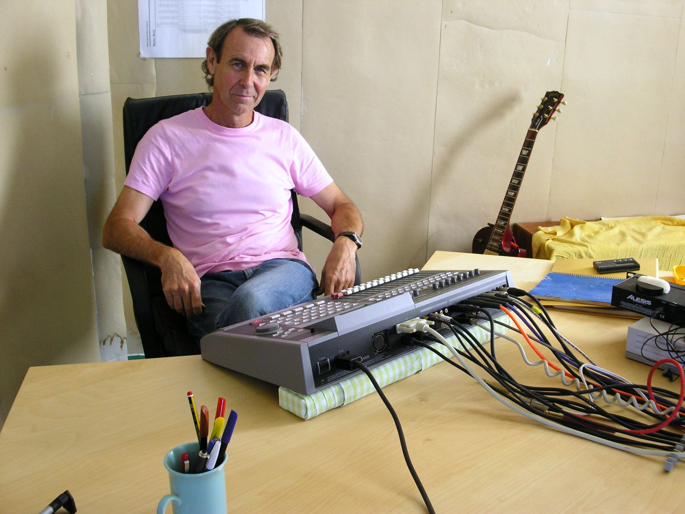
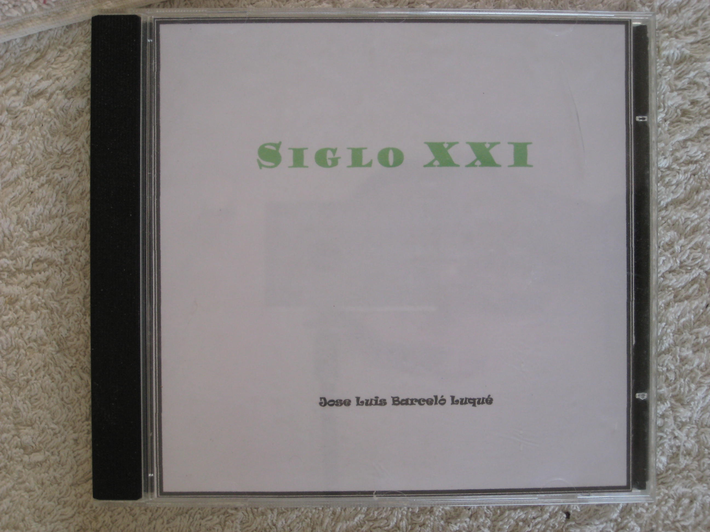
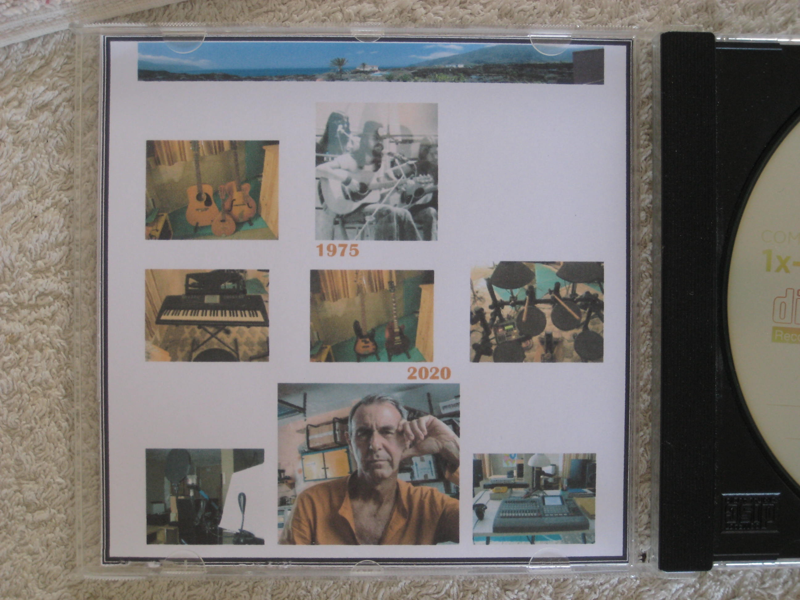
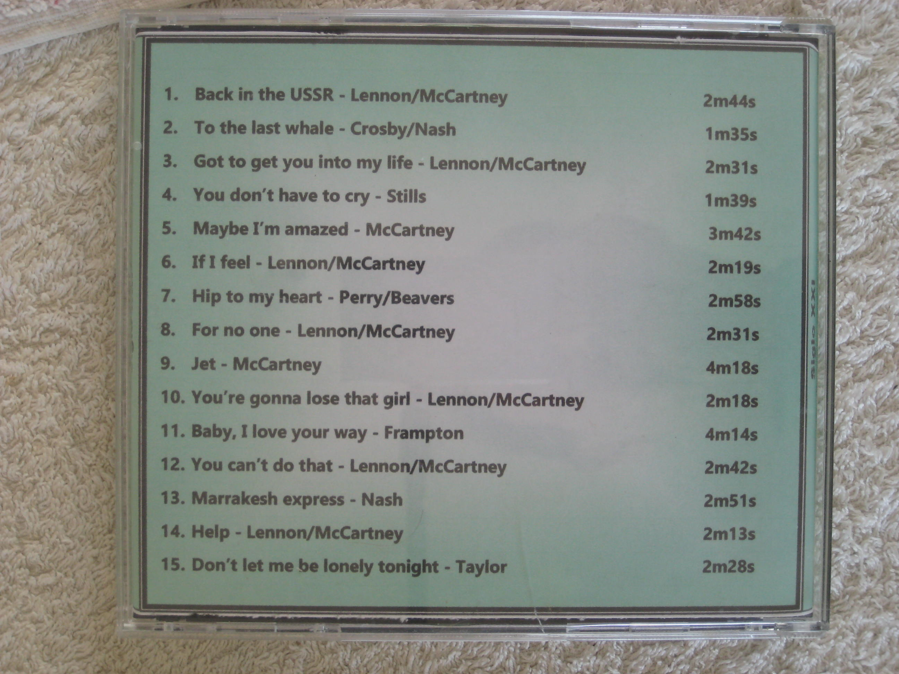

Canciones JLBL
Siglo XXI
El CD Siglo XXI es un grupo de quince canciones grabadas desde marzo de 1999 hasta enero del 2021 en el estudio de la Casahexagonal en la isla canaria de El Hierro.
El estudio se basa en una mesa grabadora Roland 1680 y en los siguientes instrumentos:
- Guitarras acústicas Yamaha y Hofner y una mandolina
- Guitarra eléctrica Gibson Les Paul y bajo Fender de Luxe P-Bass
- Percusión Roland TD8
- Teclado Yamaha PSR-330
- Y un micrófono Neumann TL103



Estas son las canciones incluidas, el año de grabación y su duración:
- Back in the USSR- Lennon/McCartney - Mayo 2013 - 2m44s
- To the last whale - Crosby/Nash - Marzo 2004 - 1m35s
- Got to get you into my life - Lennon/McCartney - Agosto 2011 - 2m31s
- You don't have to cry - Stills - Septiembre 2009 - 1m39s
- Maybe I'm amazed - McCartney - Diciembre 2008 - 3m42s
- If I feel - Lennon/McCartney - Noviembre 2000 - 2m19s
- Hip to my heart - Perry/Beavers - Marzo 2015 - 2m58s
- For no one - Lennon/McCartney - Septiembre 2011 - 2m31s
- Jet - McCartney - Noviembre 2019 - 4m18s
- You're gonna lose that girl - Lennon/McCartney - Marzo 2000 - 2m18s
- Baby, I love your way - Frampton - Enero 2021 - 4m14s
- You can't do that - Lennon/McCartney - Abril 2001 - 2m42s
- Marrakesh express - Nash - Septiembre 2007 - 2m51s
- Help - Lennon/McCartney - Marzo 1999 - 2m13s
- Don't let me be lonely tonight - Taylor - Febrero 2015 - 2m28s
Siglo XXI 2
A partir de 2024 empieza la grabación de la segunda parte de Siglo XXI. La mayor parte de estas canciones son
intentos para la primera parte que fueron desechados por dificultades técnicas y musicales; también se incluyen algunas canciones nuevas.
Todas irán apareciendo a continuación, a lo largo de los próximos años.
- Another Day - Taylor - Diciembre 2025 - 2m16s
- Taxman- Lennon/McCartney - Mayo 2025 - 2m22s
- Fire & Rain - Taylor - Mayo 2025 - 3m45s
{kind=link}
{kind=link}
{kind=link}